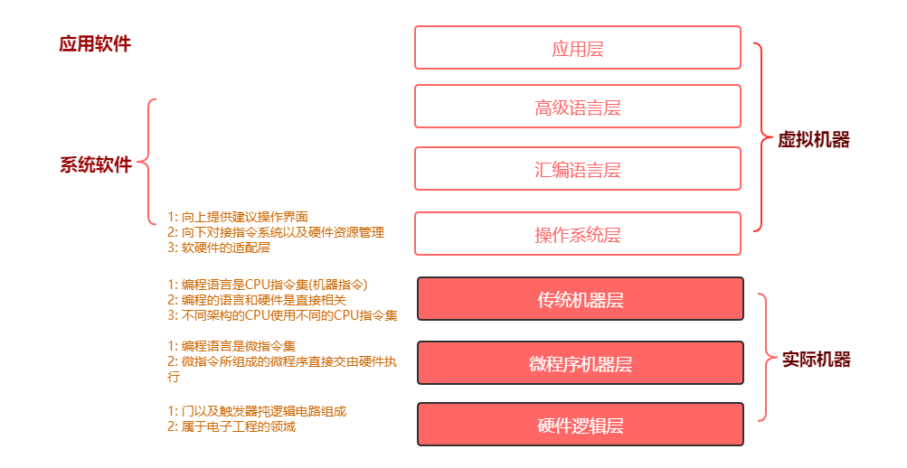

计算机组成原理学习笔记
概述篇
程序翻译 与 程序解释
- 计算机执行的都是低级语言
- 翻译过程执行新的低级语言,解释过程不生成新的低级语言
- 解析的过程是低级语言的编写的解释器去解释高级语言
计算机的层次与编程语言
计算单位
容量单位
网络速度是实际
百兆光纤为啥只有12M/s的下载速度网络常用单位是
Mbps. 百兆光纤也就是100M/s,即: 100Mbps 也就是 100Mbit/s换算过来: 100Mbit/s=(100/8)MB/s 也就是 12.5MB/s
CPU速度
- 一般体现为CPU的时钟频率,时钟频率单位一般是赫兹 (Hz) 主流CPU都在2GHz以上
- Hz 秒分之一 : 每秒的周期性变动重复次数的计量
组成篇
总线
- 提供对外连接接口
- 分类
- 片内总线: 高集成度芯片内部的信息传输线
- 系统总线: CPU 主内存 IO设备 各组件之间的信息传输线 (USB…)
作用: 解决不同设备之间通信问题
指令执行过程
计算篇
原码表示法
- 进行运发非常复杂
补码/反码
实践篇
双向链表
- 每一个节点都有上一个节点和下一个节点的地址或者引用,首节点没有上一个节点,尾节点没有下一个节点
FIFO
LRU
LFU
- 本文链接：https://www.wl960127.top/posts/32d92359/
- 版权声明：本站内容均为个人学习笔记,不涉及商业用途，仅提供学习参考,第三方摘录已署名链接,未署名请评论添加,转载署名来源即可。
分享